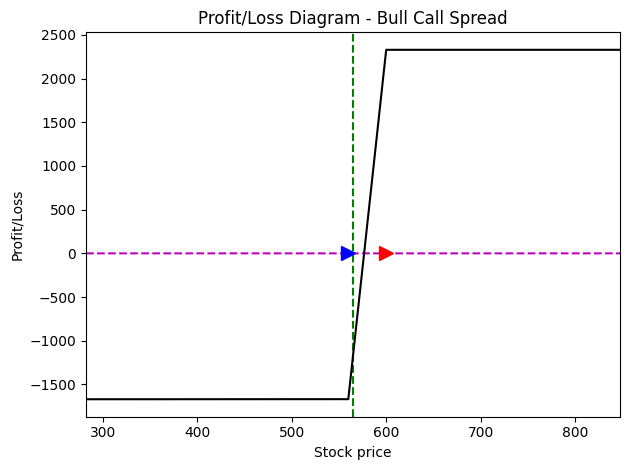
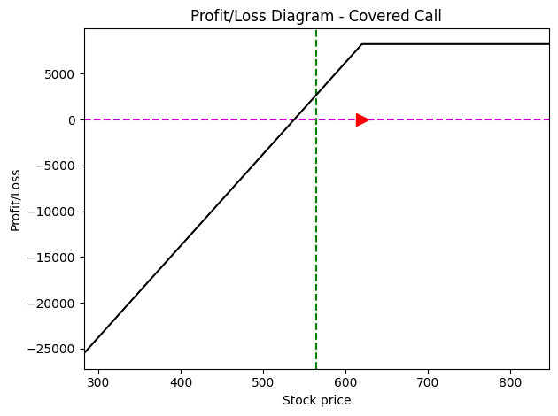

Quantitative Analysis by Grecia Zarella Alvarez Leyva

This report focuses on the development and evaluation of two bullish options trading strategies using real-world option chain data. Through Python-based analysis, the project assesses Bull Call Spreads and Covered Calls, focusing on trade feasibility, liquidity, and profitability metrics.
Filtering for Liquidity: To ensure realistic execution, the dataset was filtered based on Bid-Ask spreads and Open Interest. This step ensures that the strategies are not just theoretical but actionable in a real market environment.
Technical Processing: Python was used to clean 14 key variables, including implied volatility and the Greeks, ensuring data integrity before strategy formulation.
The evaluation compares a moderate growth strategy with a conservative income-generating approach. The Probability of Profit (PoP) and risk profiles were calculated for contracts expiring on January 19, 2024.
| Metric | Bull Call Spread | Covered Call |
|---|---|---|
| Market Sentiment | Moderate Bullish | Conservative / Income |
| Probability of Profit | 41.91% | 61.97% |
| Risk Profile | Limited Gain/Loss | Defined Income / Capital Heavy |
| Key Greek Focus | Vega / Delta | Theta (Time Decay) |
Analysis of how the strategy profits from moderate upward movements while capping potential losses.
Evaluation of income generation. The results show a high 61.97% success rate in the analyzed domain.
The analysis demonstrates that the Covered Call is a superior strategy for consistent income due to its high probability of profit and positive Theta. However, the Bull Call Spread remains an efficient tool for leveraged bullish positions with strictly defined risk parameters. This project highlights the ability to apply financial concepts through Python to optimize investment decisions.